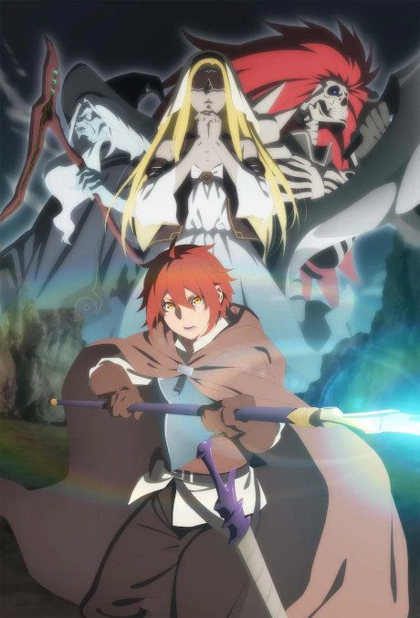
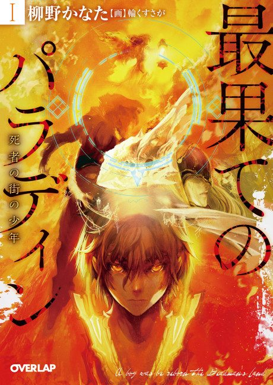

Anime
Light novel2021 · Action, Adventure, Fantasy
The Faraway Paladin
最果てのパラディン
AniList6.8
Animeter—
2 seasons24 ep
SourceVol. 4
Is it worth pushing through?
Built from what visitors report across all 2 seasons (24 episodes).
Loading reports…Checking what other people said about this one.
Sign in with your email at the top of the page to add your report.